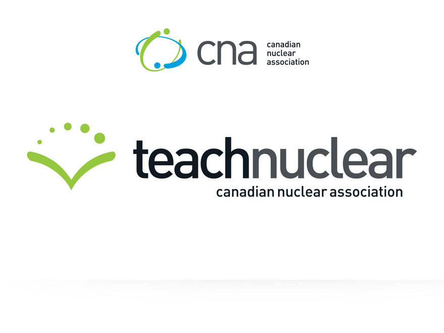
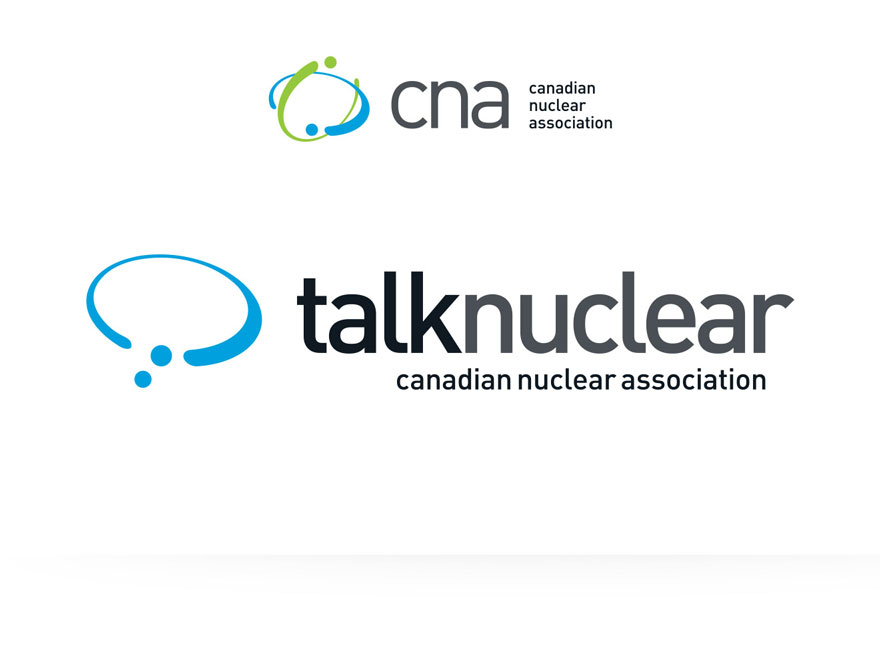
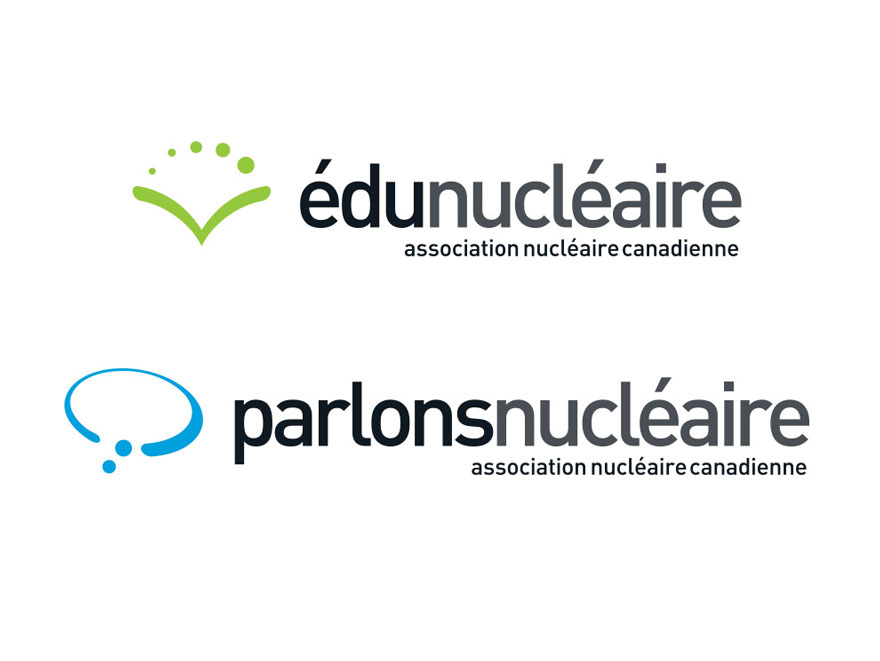

<!--Work Preview section-->
<section class="offset section">
			
	<!--Inner content-->
	<div class="innerContent">

		<!--Container-->
		<div class="container clearfix">
			<div class="fifteen columns">
				<div class="work-preview-close"></div>
			</div>
		</div>
		<!--Container-->
		
		<!--Container-->
		<div class="container clearfix">

			<div class="fifteen columns">

				<!--slider-->
				<div class="work-preview-slider clearfix flexslider" >

					<div>

						<ul class="slides">
							
							<li>
								
							</li>
							
							<li>
								
							</li>

							<li>
								
							</li>

						</ul>

					</div>
					
				</div>
				<!--slider-->

			</div>


			<div class="fifteen columns work-info">
				<h1 class="title">Teach and Talk Nuclear Brand Identities<br><span>Branding</span></h1>
				<p>In a recent push for nuclear education in classrooms, the Canadian Nuclear Association (CNA) expressed a need for two cohesive brand identities for some informational sites they have available for anyone wanting to learn more about the nuclear industry.</p>

				<p><em>Teach Nuclear</em> is a platform of information targeting students and teachers who have questions about nuclear energy. There you can find links to articles, FAQs, and downloadable lesson plans for educators interested in implementing nuclear energy into their curriculum. <em>Talk Nuclear</em> offers the latest news on the nuclear industry in a blog format which is operated, maintained, and updated by CNA.</p>

				<p>To establish a consistent look between Teach Nuclear, Talk Nuclear, and the Canadian Nuclear Association logos, shapes from the CNA icon were used to build two different, yet connected, identities.</p>

				<p>The Teach Nuclear icon is in the form of an open book representing education, wisdom, broad-mindedness and understanding. Additionally, the growing arching circles exemplify the development of knowledge and the progressive and bright future of nuclear technology.</p>

				<p>The Talk Nuclear logo is easily recognizable as a speech bubble. The rounded form of the bubble comes directly from the CNA logo and is appropriately used to represent open conversation and awareness.</p>

				<!--<div class="social-icons">
					<ul>
						<li><i class="step fi-heart"></i><span>100</span></li>
						<li><i class="step fi-social-facebook"></i><span>620</span></li>
						<li><i class="step fi-social-twitter"></i><span>450</span></li>
						<li><i class="step fi-social-pinterest"></i><span>100</span></li>
					</ul>
				</div>-->

			</div>


		</div>
		<!--Container-->
	
	</div>
	<!--Inner content-->

	
</section>